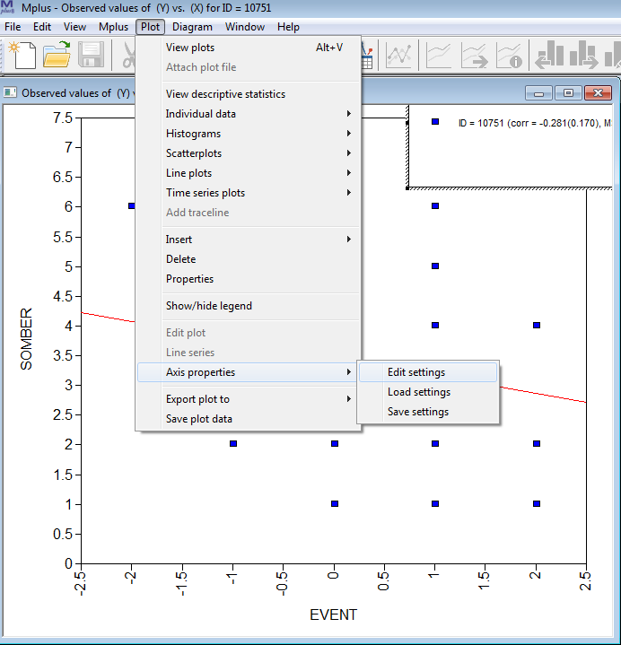
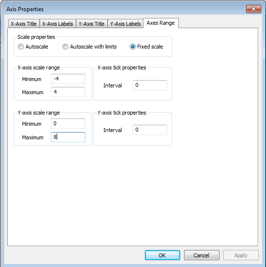

5.2 Random Intercept and Slopes Model with Implicit Lagged Effects (not DSEM)
In Model 2, we extend Model 1 to allow for individual differences in the within-person slope. This implies that people may respond differently to a temporary increase in the variable Event; this can be interpreted as individual differences in reactivity. This random slope b1 becomes another latent variable at the between-person level, where we can use it as a predictor of the person-specific means of the variable Somber. We will also allow this slope variable to correlate with the means of Event.
Model 2 can be represented as depicted below, with on the left the within-between decomposition, and on the right the regression models specified at each level. Note the black dot on the arrow to indicate a random slope at the within level.

5.2.1 Specify the Mplus Model
Write down the model command for this model. When your are done, check whether you specified it correctly by looking at the provided answers, and/or the input file model2.inp. Note that under command ‘ANALYSIS’ in the input file, we now need to specify type = TWOLEVEL RANDOM.
Click to show answers
MODEL: %WITHIN%
b1 | Somber ON Event;
Event;
%BETWEEN%
Somber ON Event b1;
b1 WITH Event;5.2.2 Model Equations
While the model is running, write down the model equations. The decomposition into within and between will be the same as for Model 1.
- Write down the within level model. What parameters are estimated at this level?
Click to show answers
\[S^{(w)}_{it}=b_{1i}\times E^{(w)}_{it} + \zeta_{S it}\]
The difference is that now the regression coefficient has a subject index i, because it now differs from person to person. The mean and variance of b1i are estimated at the between person level.
Parameters estimated at this level: - Residual within-person variance of \(\zeta_{Sit}\) - Within-person variance of the predictor \(E^{(w)}_{it}\)
- Write down the between level model. Which parameters are estimated at this level?
Click to show answers
\[\mu_{Si} = \gamma_{00} + \gamma_{01} \times \mu_{Ei} + \gamma_{02} \times b_{1i} + \zeta_{Si}\]
Parameters estimated at this level:
- Grand intercept \(\gamma_{00}\)
- Between-person slope \(\gamma_{01}\)
- Between-person slope \(\gamma_{02}\)
- Between-person residual variance of \(\zeta_{Si}\)
- Mean of the between-person predictor \(\mu_{Ei}\)
- Variance of the between-person predictor \(\mu_{Ei}\)
- Mean of the between-person predictor \(b_{1i}\) (i.e., within-person slope)
- Variance of the between-person predictor \(b_{1i}\)
- Covariance of \(b_{1i}\) and \(\mu_{Ei}\) (with statement in mplus code)
5.2.3 Convergence
Check the trace plots of the posteriors for the parameters of the model. Can you link them to the free parameters you identified above? Are there signs of non-convergence?
Click to show answers
All looks good.
5.2.4 Interpret the Results
- Which parameter is the one we should focus on when interested in the average of the person-specific within-person slopes b1?
Click to show answers
Between Level
Means
B1 -0.206 0.014 0.000 -0.234 -0.179 *It is the mean B1 reported at the between level.
- There are two ON statements at the between level now. Report the results for these regressions, and indicate how to interpret these results.
Click to show answers
Between Level
SOMBER ON
B1 -1.966 1.079 0.020 -4.366 -0.095 *
SOMBER ON
EVENT -0.839 0.176 0.000 -1.188 -0.490 *As before: People with a relatively high (compared to other people) mean for event, tend to have a relatively low (compared to other people) mean for somberness.
In addition: People that have a relatively low mean for somber (compared to other people), tend to have a lower within-person slope b1.
Interpreting the effect of b1 on Somber is challenging for most people. What may be helpful is to make a plot of the (bivariate) relationship between b_1i and the within-person mean on somber.
Click for instructions
Go to the plotting options and choose “Between-level scatterplots…”

Click View. Then select “B1, mean” (the posterior means of each person’s B1 coefficient) as the X variable and “SOMBER (estimated cluster mean)” (each person’s mean for Somber) as the Y variable:
Click OK. This produces the scatter plot.
- Interpret the relationship you see in the scatterplot.
Click to show answers

The correlation is negative (about -0.503), indicating that a higher b1 (within-person slope) tends to go together with a lower person-mean on somber.
Note that the individual differences in b1 run from -0.5 to about 0. Hence, the closer b_1i is to zero, the lower the person’s average score on somber.
Put differently, people who tend to be less reactive to momentary changes in Events (b_1i closer to zero), are also characterized by a lower trait score on somber.
Note that this plot is just presenting the bivariate relationship between the two random effects; in contrast, the regression coefficient in the output also is based on a regression model with multiple predictors (in this case, also the person mean on Event). Hence the scatter plot may be helpful, but is not a direct reflection of the regression coefficient (this is the same as in normal multiple linear regression analysis).
- Let us look at the person-specific slopes (the random effect b1) that were estimated.
Click for instructions
To this end, go to the plot menu again and choose the option “Two-level cluster-specific observed and estimated values plots”. Click “View”, and click “OK” in the next window: Now you have a scatter plot of the data of a single individual, with the variable Event on the x-axis and Somber on the between-axis. The slope of the red line is the individual’s b1 (the individual specific regression coefficient for regressing Somber on Event).
To fix the axes (which makes it easier to compare the results across individuals, go to the plot menu at the top, choose “Axis properties” and then “Edit settings”:

In the next window, choose the “Axes Range” tab, click the “Fixed scale” option (at the top), and set the scale range for X from -4 to 4 (because Event was measured on a scale running from -3 to 3), and set the scale of Y from 0 to 8 (because it was measured on a scale from 0 to 7). Then click “OK”.

Now, you can go through the plots of different individuals by clicking the person buttons on the top (with the left arrow to go back, and the right arrow to go forward). Because you fixed the axes, you can easily compare the slopes for different people. This illustrates that every person has his/her own slope.